Explore universities
Search for university (drop-down)
Select country (drop-down)
At the bottom of it show 1 2 3 … 30 next only; it is too long (check this link for corresponding https://globalstudyabroad.com/universities/)
Australian schools
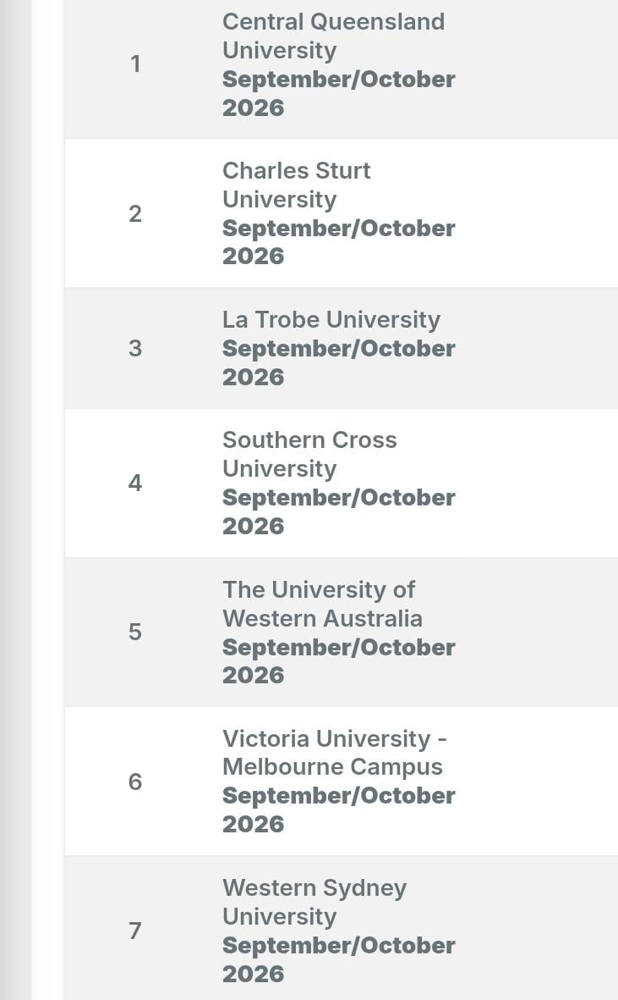
France
Ireland
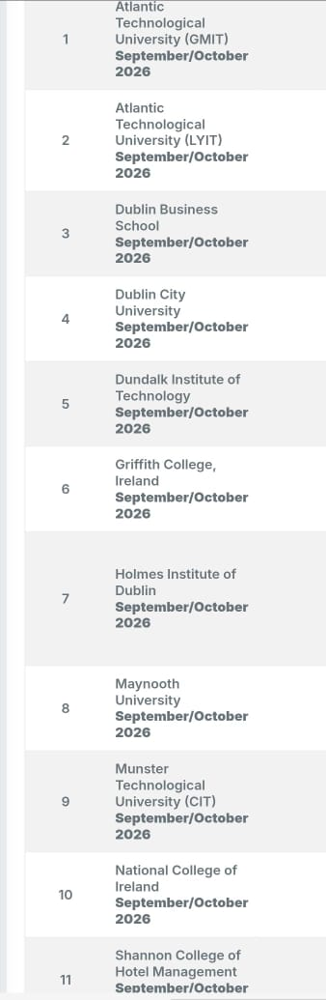
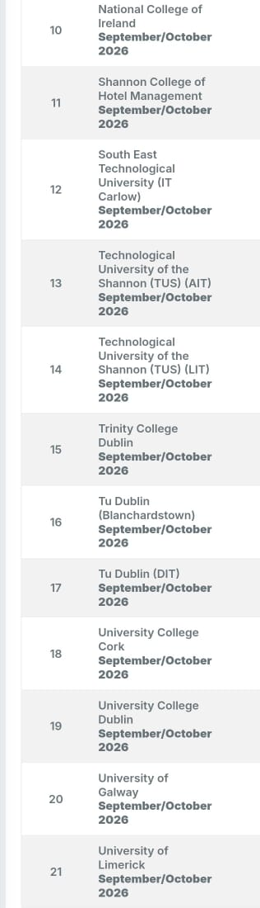
New Zealand schools
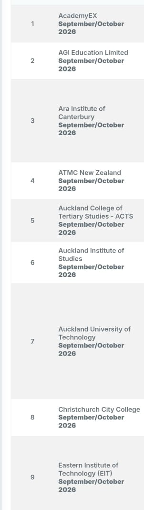
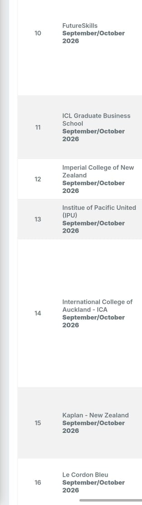
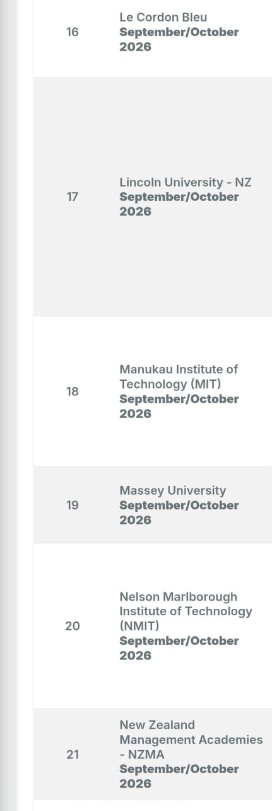
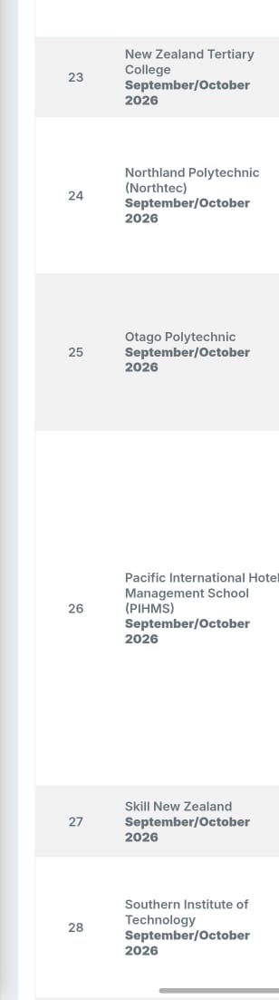
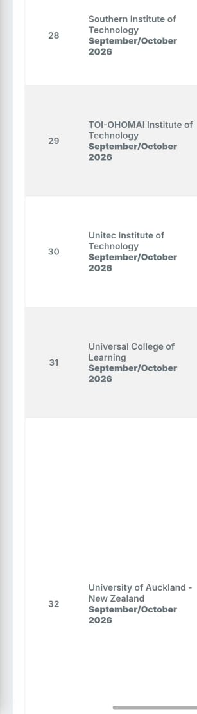
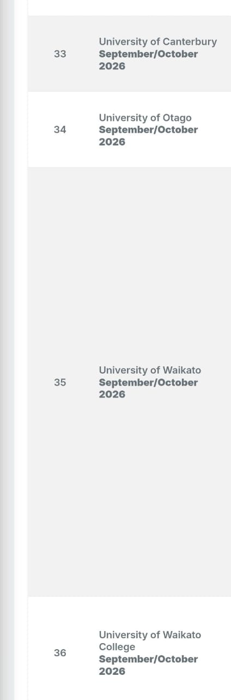
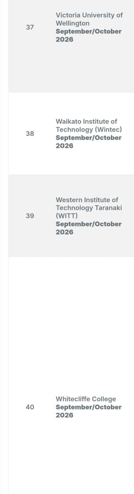
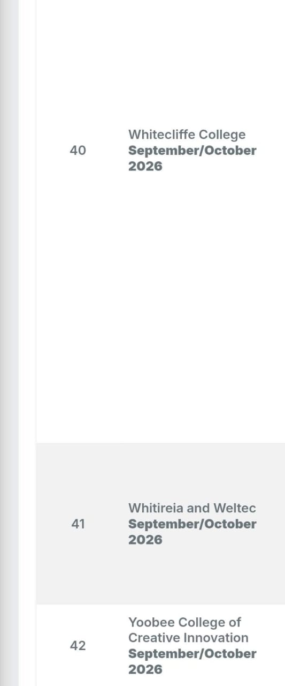
Singapore schools
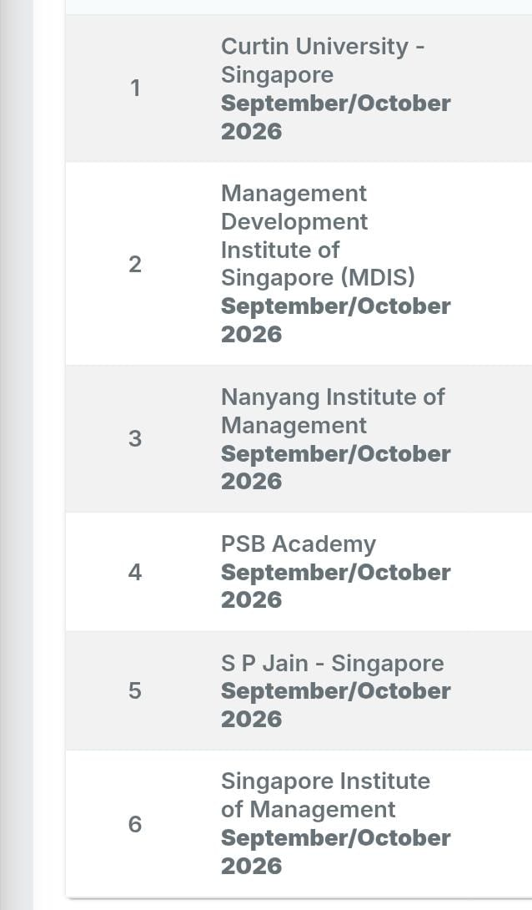
Uk schools
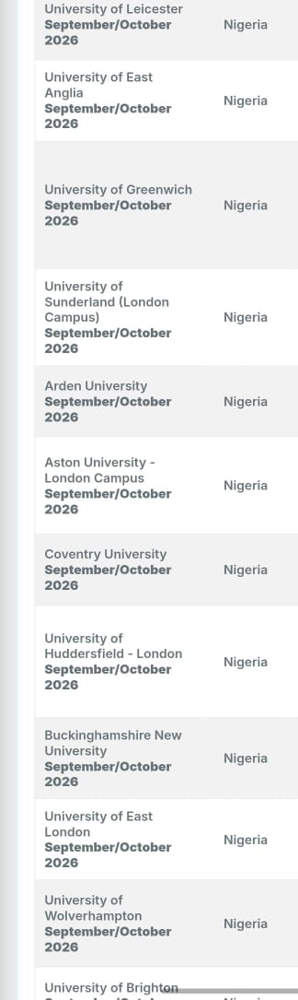
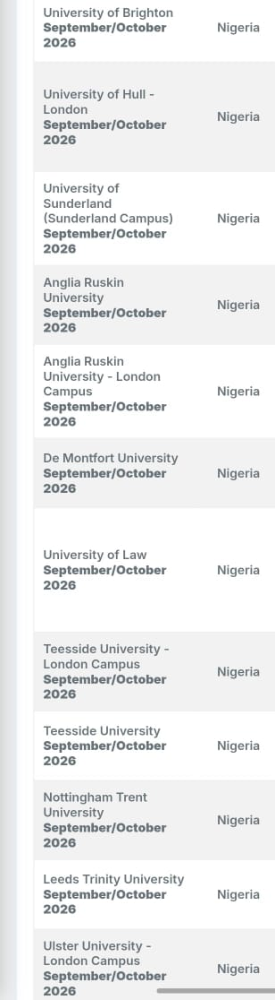
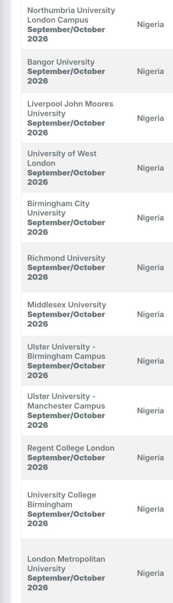
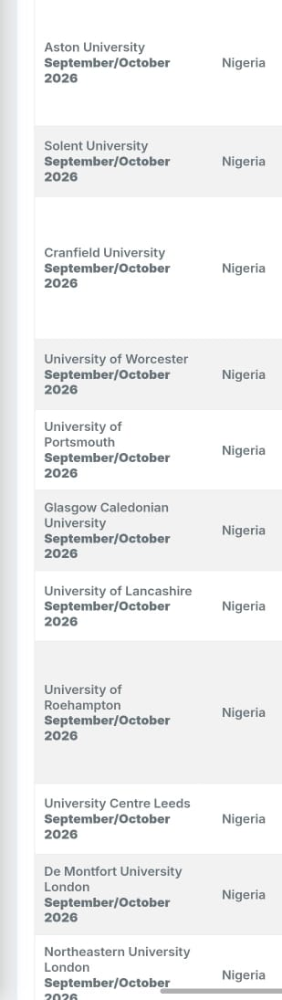
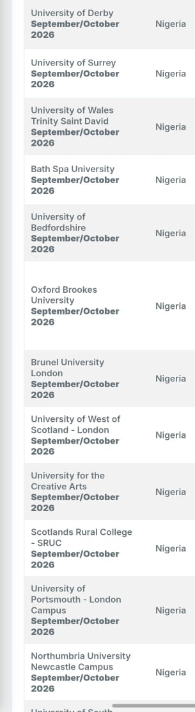
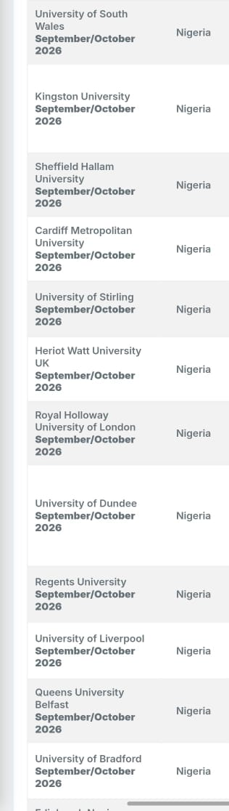
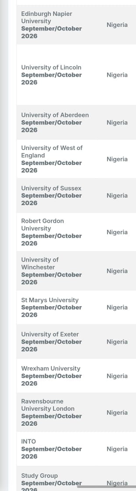
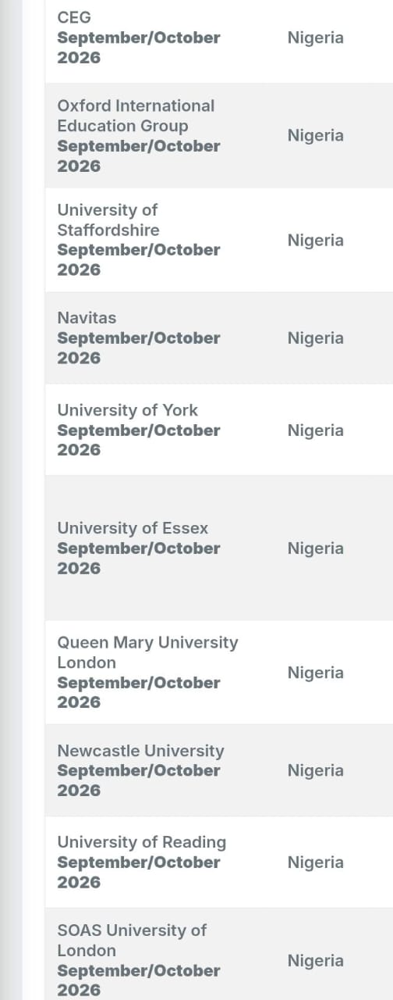